Get your swords ready, its time for the PVP UPDATE!
We've jammed in so much content this update, we hope EVERYONE can enjoy this!
Added
PVP Island
It's time for a new island!
This one's unique.
Only accessible from the portal at spawn, on entering you'll be thrown into the action!
PVP is always enabled, except for when bosses are active.
When dying, you'll only lose PVP-related items like armor, swords, axes and bows.
Farming Tools and Crops will be returned to you when you respawn!
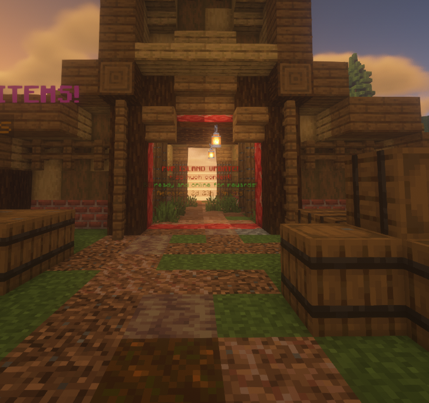
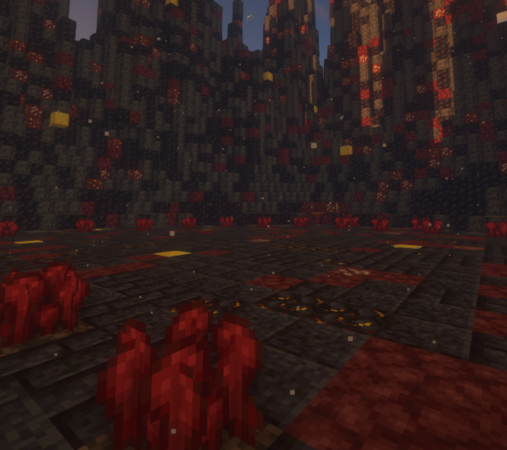
Bosses
The PVP Island isn't empty.. something needs to be awakened!
The new Minotaur boss can only be spawned with the new Nether Wart crops!
Anyone can contribute to the Global Boss Machine. Once 100 are added, the boss will summon.
On boss death, chance to drop the new Warrior charm!
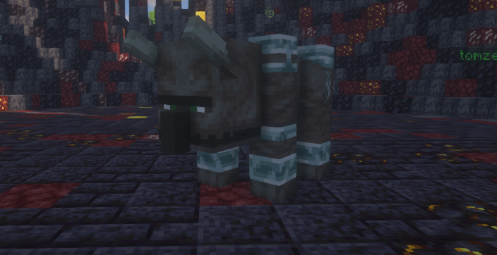
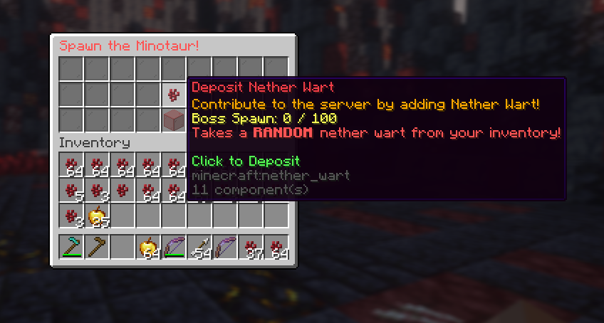
New Crop
Finally.. a new CROP!
Only obtained on the surrounds of the PVP Island, the Nether Wart has low respawn times.
Good luck fighting your enemies for this expensive new crop!
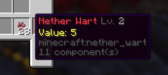
New Competition
With the introduction of a new crop, I thought I'd run an additional competition.
With everyone's incredibly high Farm Levels and Shinys, let's see how far you can push this!
Winner will receive the Medallion Charm!
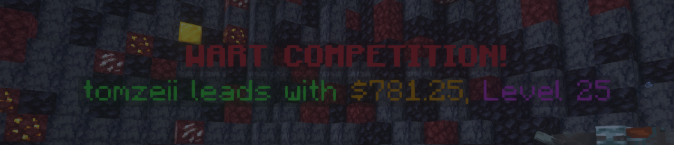
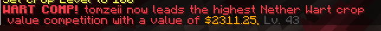
New Crates
How else do you expect to fight the boss?!
Introducing.. 3 new crates! Containing TONS of useful PVP-gear!
Bronze Crate: Chance to drop when farming Wheat crop
Silver Crate: Chance to drop when farming Carrot crop, also by combining 3x Bronze Crates
Crystal Crate: Chance to drop when farming Beetroot crop, also by combining 4x Silver Crates
These aren't easy to get, and will take lots of grind to get the best items.
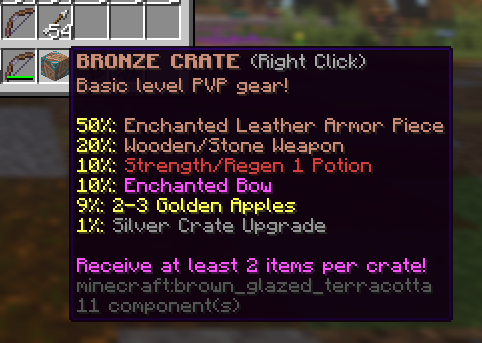
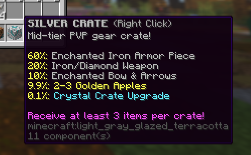
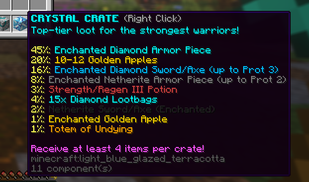
Crate Upgrading
Too many low-level crates?!
Upgrade them into even better ones, for FREE!
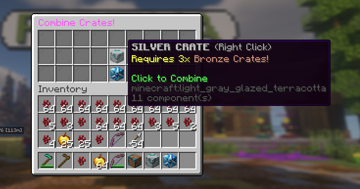
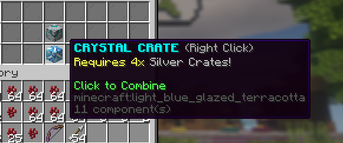
Global Competition
How fast can you get this global goal completed?
Globally, upgrade 2,000 Crates in the new Crate Combine Machine!
EVERYONE ONLINE will be rewarded with 5x Exclusive Chorus Flower, worth $25.99 on the Server Store!
The top contributor will win the FIRST EVER medallion charm!
Good luck, ensure you're always online to not miss it!
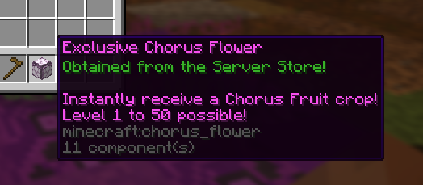
Charms
Looking to passively earn Money or Gems, or want to level up your PVP game?!
Introducing.. CHARMS, now with 3 total slots!
Slot 1: Free
Slot 2: Unlocks at Rebirth 1
Slot 3: Unlocks at Rebirth 3
This update alone brings 6 new unique charms to collect:
Will you get them all?
Luxuriant - Chance to receive a Diamond or Money Lootbag every minute - occasionally spawns in the Tier 3 Travelling Merchant
Glittering - Chance to randomly get 5-15 Gems every minute - reward for playing 24 consecutive hours
Warrior - Chance to get Strength I for 20 seconds on kill - drops from the new Minotaur boss
Shiny Hunter - DRASTICALLY increases your chances at getting Shiny Crops - small chance to receive in the Shiny Crops quest
Medallion - Chance for crops to INSTANTLY CLONE - reward for leaderboards and competitions
Diamond Delirium - All diamond drops are DOUBLED - extremely low chance from the Hype Chest that appears 1 hour before update*
Good luck!
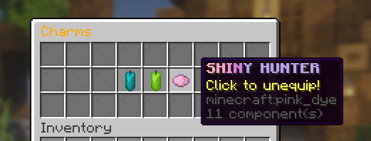
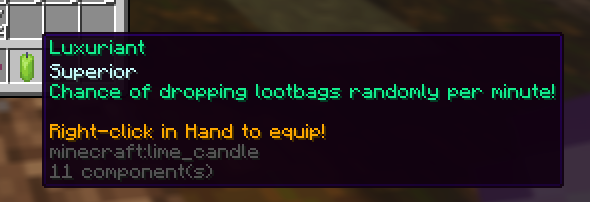
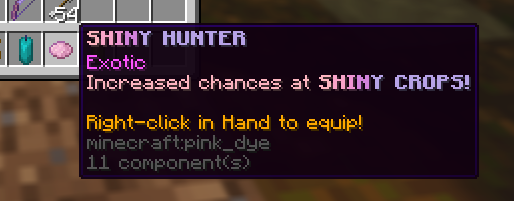
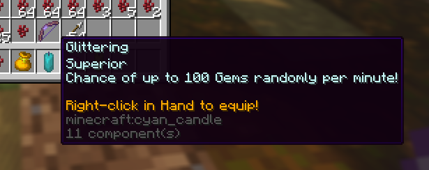
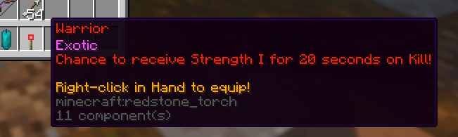
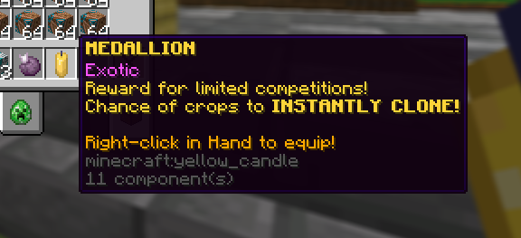
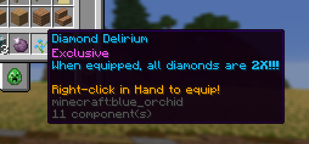
*The Gem Hype Crate normally appears a few hours before updates. It was not added this week as charms were not implemented yet. Come back next week!
Playtime Rewards
Even more rewards.. for literally just playing?!
Enjoy extra rewards for playing the server!
Be warned though, your progress resets if you disconnect or rejoin!
The ultimate reward for 24 consecutive hours: the GLITTERING CHARM!
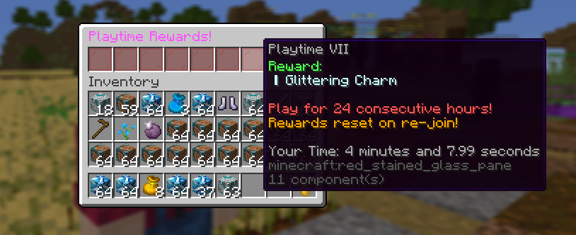
Upgrade: Free Extra Storage
We've heard your concerns.
You can now purchase the More Storage Upgrade for 2 extra rows in your Storage/Backpack, totalling 27 item rows.
With this change, the More Storage upgrade on the Server Store now gives a total of 6 rows.
It's not cheap though.
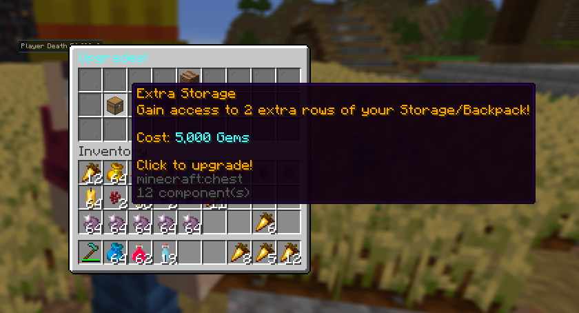
Randomised Welcome Messages
New players weren't welcomed properly at all.
Welcome reward messages are now randomised, and truly invite new players into the community.
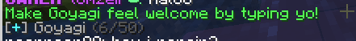
Vote Sites
Get rewarded by supporting us completely for free!
Head to all votes sites below everyday, type your username in and receive 5x Vote Crates PER SITE!
Changed
Farm Growth Handling
Farm Growth is now handled client-sided. This now allows large amounts of concurrent players to farm the same areas at once. Credits to @chieltje on Discord for making this happen.
Composter Changes
Composter now works at about 75% efficiency when offline. This encourages online activity on the server.
Escrow Changes
The item limit on your Escrow is now dynamic based on Farm Level.
Fixed
- Several fixes to Travelling Merchant message hexcode issues
- Gem Hoe is now available for purchase in the Travelling Merchant, tiers 2-3
- /paymoney command is now removed, gems are to be considered the traded currency on the server. Use /paygems.
- Reaching Crop Milestones now gives 1x Vote Crate
- Cocktail Essence are now obtainable from a small chance when farming any crop, allowing The Cocktail to be crafted.
- Combine all button in potion combine menu not longer has potions mastery 10 requirement
- Updated Season 1 NPC to clarify the server is not resetting, and that the winner receives the Medallion Charm
- You can no longer drop Locked Items
- Added a chat filter because people don't say nice things
~ Thank you for absolutely shattering ALL of BytePlay's records to date. Cheers to even more!